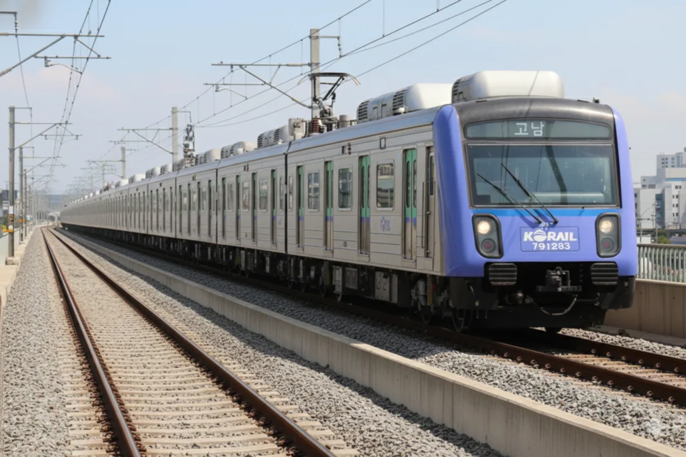
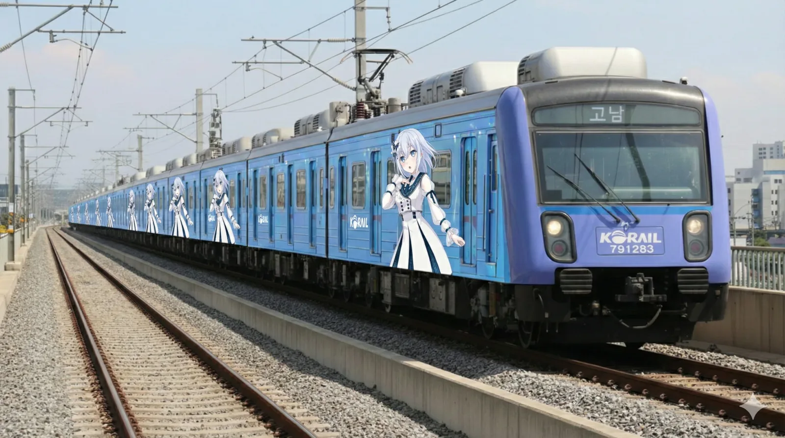
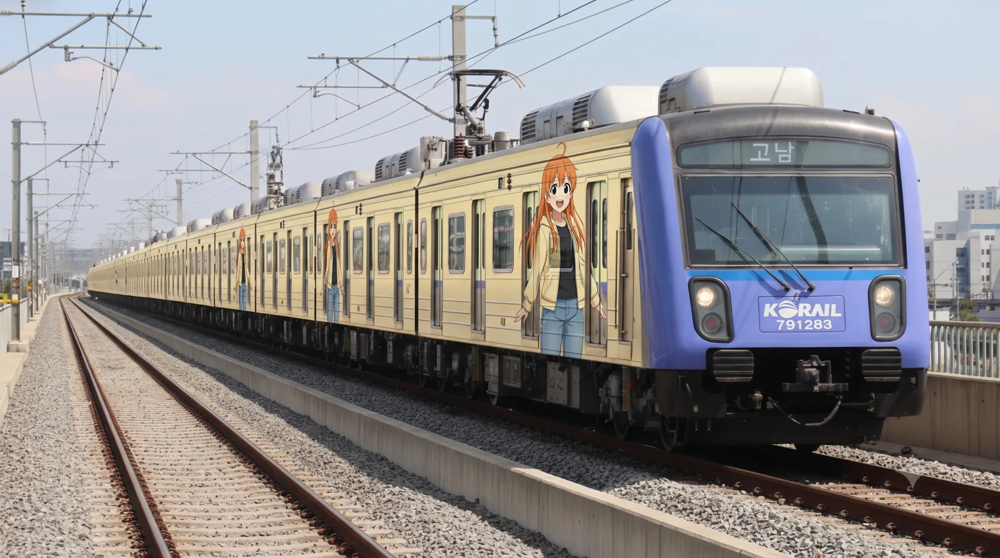

|
|||
|
 한국철도공사 791000호대 전동차 (일반)
 
고남차량사업소에서 촬영된
빈효선 공식 마스코트 '전노아' 래핑열차 |
|||
| 노선도 | |||
|---|---|---|---|
|
[ 펼치기 · 접기 ]
|
|||
| 노선 정보 | |||
| 노선 분류 | 일반철도 (효빈항 ↔ 고남) | ||
| 차량 분류 | 대형 중전철 | ||
| 광역철도 지정구간 | 영내 ↔ 고남 | ||
| 기점 | 효빈항역 | ||
| 종점 | 고남역 | ||
| 역 수 | 37개 | ||
| 구성 노선 | 빈효선 | ||
| 상징색 |
연청색 (#6677CC) 코레일 블루 (#0054A6) |
||
| 개통일 | 2017년 5월 2일 (8주년) | ||
| 소유자 | 대한민국 정부 (국가철도공단 위임) | ||
| 운영사 | 한국철도공사 | ||
| 사용 차량 | 791000호대 전동차 | ||
| 차량기지 | 고남 차량사업소 효빈항 차량주박기지 | ||
| 노선 제원 | |||
| 노선연장 | 80.95km | ||
| 궤간 | 1,435㎜ (표준궤) | ||
| 선로구성 | 복선 | ||
| 급전방식 | 교류 25,000V 60㎐ 가공전차선 | ||
| 신호방식 | Kyosan Signal ATC/ATO | ||
| 최고속도 | 110㎞/h | ||
| 표정속도 | 52㎞/h | ||
| 통행방향 | 좌측통행 | ||
| 지하구간 | 효빈동신도시 ↔ 효빈역 | ||
| 개통 연혁 |
2017.5.2 (1차) 효빈항 ↔ 아이 2019.5.2 (2차) 화소, 아이 ↔ 천주 2021.5.2 (3차) 홍하, 근강, 시곡 2025.5.2 (4차) 고남 2029.2.2 덕현중앙 (예정) 2030.4.30 부진 (예정) |
||

1. 개요
효빈 도시철도의 핵심 대동맥이자 효빈권 전철의 중추적인 운행 계통으로, 2017년에 개통하였다. 운영기관은 한국철도공사(코레일)이며, 운행하는 열차는 한국철도공사 791000호대 전동차(6량 1편성), 통행방식은 코레일 노선답게 좌측통행을 철저히 준수한다. 노선 상징색은 ● 연청색이며, 색이 품은 의미는 효빈과 주변 지역을 하나로 묶는 '물아일체'이다.
배차간격은 출퇴근(RH) 시에는 5~6분, 평시(NH)에는 7~9분, 심야 및 첫차/막차 시간대에는 11~15분 간격으로 운행된다. 광역철도 치고는 꽤나 준수한 배차를 자랑하지만, 연선 인구가 워낙 무시무시해서 출퇴근 시간엔 5분 배차로도 가축수송을 피할 수 없는 악명 높은 노선이기도 하다.
2. 건설 목적
- 효빈광역시와 약산시, 천주시 간의 물리적 장벽 붕괴 및 완행열차 완전 대체: 과거 노후화된 무궁화호나 살인적인 배차의 시외버스에 의존하던 3개 도시의 통근러들에게 빛과 소금이 되어 주었다.
- 1호선과 4호선의 한계를 보완하는 쾌속 교통망: 이 노선은 효빈 도시철도 1, 4호선이 도심을 빙빙 돌아가는 선형이라 급행을 굴려도 시간 단축이 어려웠던 문제를 완벽하게 해결했다. 기존 철도 선형을 쭉쭉 뻗게 개량하여 무궁화호를 완벽히 대체함과 동시에 더 효율적인 광역 이동을 보장한다.
다만 약산시 구역이나 고해역 지역은 1호선과 수요가 미묘하게 겹치고, 화소역까지 가서 환승을 해야 하는 구조적 불편함 때문에 남북 이동 수요 처리는 빈약하다는 평가가 존재한다. 그럼에도 가장 빠르게 3대 거점 도시를 잇는 대동맥 역할을 하므로, 이자역이나 안천역에서 1호선, 4호선으로 환승 시 발생하는 강력한 네트워크 효과가 단점들을 모두 씹어먹는다. - 빈주광역철도와의 연계를 통한 초광역 대도심권 체계 구축: 향후 부진역 연장을 통해 빈주권과 완전히 직결되어, 덕빈북도 전체를 커버하는 사기급 노선으로 진화할 예정이다.
3. 역사
2004년 효빈 5호선과 함께 국가 핵심 교통망으로 계획이 추진되어, 2007년 1월 11일에 1단계 구간(효빈항 ↔ 아이, 홍하~근강 구간 제외)이 정상적으로 착공하여 2013년 개통을 목표로 달리고 있었다.
그러나 당시 교통 인프라에 진심이었던 박현만 시장이 민주진보계열의 표 분열로 인해 단 3표 차이라는 역대급 접전 끝에 윤대환 후보에게 패배하면서 헬게이트가 열렸다. 윤대환 시정의 극단적인 '철도 말살 정책'으로 인해 잘 진행되던 착공이 전면 백지화된 것이다. 당연히 인접한 약산시와 천주시는 뒤집어지며 거세게 항의했으나, 자신의 일가가 대주주로 있는 시외버스 독점 기업 두청운수의 밥그릇을 지키겠다는 윤대환의 탐욕 앞에 철저히 묵살당했다.
결국 뚜껑이 열린 약산시장과 천주시장은 법원에 공동으로 행정 소송을 꽂아버렸고, 이 과정에서 윤대환의 추악한 비리들이 양파 껍질 까지듯 연일 터져 나왔다. 대법원은 2007년 11월 윤대환에게 공직선거법 위반 및 직권남용 등으로 당선무효형을 선고하며 그를 쫓아냈고, 2008년 6월 보궐선거를 통해 철도 성애자 박현만 시장이 기적적으로 복귀하며 죽어가던 광역철도 사업이 심폐소생술을 받게 된다.
이후 2009년부터 두청운수에 대한 강도 높은 세무조사와 압수수색을 거쳐 정의를 구현한 뒤, 2010년 4월 12일 마침내 1단계 구간이 3년 만에 다시 삽을 떴다. 2013년에는 2단계 구간(아이~천주)이 추가로 착공했으며, 수많은 우여곡절과 공기 지연 끝에 2017년 5월 2일 1단계 구간이 감격적인 개통을 맞이했다. 이날 약산시와 천주시에서는 기쁨의 춤판이 벌어졌다 카더라.
2018년부터는 수요가 애매해 후순위로 밀렸던 면 단위 지역인 근강, 시곡, 홍하역 공사가 시작되었고, 2019년 2단계 구간 개통 시 이 역들은 먼지만 날리는 공사장 상태로 무정차 통과했다. 2021년 5월 2일에 마침내 면 지역 광역전철역들(3단계)이 영업을 개시하며 지역 차별 논란을 종식시켰고, 2025년 5월 2일엔 고남역까지 연장 개통되었다. 향후 2029년 2월 2일 덕현중앙역(5호선 환승) 신설 개통, 2030년 4월 30일 부진역 연장 개통을 목표로 현재 활발히 포크레인이 흙을 파내고 있다.
4. 논란 및 사건 사고
4.1. 2006년 광역철도 분담금 거부 사태
빈효선 광역전철 건설 역사상 가장 추악한 흑역사이자 대한민국 철도 행정사에 길이 남을 역대급 스캔들. 윤대환 효빈시장 재임 시기(2006~2007)에 발생한 인접 지자체와의 심각한 유혈(?) 갈등이다. 이 사건은 단순한 예산 핑계 싸움이 아니라, 시장 일가가 소유한 버스 회사의 이익을 지키기 위해 240만 도민의 국책 사업을 고의로 파탄 낸 권력형 비리의 교과서적 사례다.
배경: 일방적인 사업 백지화
2000년대 중반, 3개 지자체는 기존 단선 비전철 철도망을 개량하여 전동차를 쑤셔 넣는 사업을 2013년 개통 목표로 순조롭게 진행 중이었다. 그러나 2006년 7월 취임한 윤대환의 일가 기업 [두청운수]는 효빈-천주-약산 간 황금알을 낳는 알짜 시외버스 노선을 완전히 독점하고 있었다. 광역전철이 뚫리면 자신들의 밥줄이 완벽히 끊길 것을 우려한 윤대환은 돌연 일방적으로 사업 백지화를 선언한다.
전개: 협상 결렬과 역대급 망언
윤대환은 이에 항의 방문을 온 타 도시 시장 및 관계자들 면전에서 다음과 같은 필터링 없는 역대급 망언을 쏟아냈다.
"솔직히 까놓고 말해서 천주나 약산 같은 거지 같은 베드타운들이 우리 효빈 덕에 먹고사는 거 아닙니까? 촌동네에 무슨 광역철도입니까? 시외버스로 충분하고, 철도는 돈지랄 예산 낭비입니다. 왜 우리 시민 피 같은 세금으로 그쪽 사람들 편하게 전철을 놔줘야 합니까? 꼬우면 버스 타면 되잖아요. 정 전철이 필요하면 니들이 100% 예산 내서 지으세요."
이 발언은 약산시와 천주시 시민들의 역린을 제대로 건드려 폭발하게 만들었다[1]. 이미 전임 박현만 시장 시절에 공사비를 인구 및 구간 비율로 공평하게 뿜빠이하기로 합의서에 도장까지 찍어놓은 상태였기 때문에, 그의 주장은 그저 버스회사 사장의 억지 생떼에 불과했다[3].
결과 및 영향: 두청운수 불매 운동과 윤대환의 비참한 몰락
"거지 동네" 망언 보도 직후, 분노 게이지가 한계치를 돌파한 천주시와 약산시 시민들은 윤대환의 자금줄인 [두청운수] 전면 탑승 거부 운동을 펼쳤다. 시민들은 독한 마음으로 자가용 카풀을 조직하거나, 비싼 택시 합승을 감수하고, 타 회사 시외버스만 골라 타며 두청운수의 숨통을 조여 말라 죽게 만들었다. 엎친 데 덮친 격으로 타 도시 시민들의 발길이 뚝 끊기며 효빈시 도심 상권까지 매출이 반토막 나며 폭망하자, 든든한 우군이었던 효빈시 상인연합회마저 등을 돌리고 윤대환 퇴진 시위에 횃불을 들고 가세했다.
결국 인접 도시의 외부 행정 소송, 효빈 시민들의 내부 퇴진 압박, 그리고 결정타로 측근 비서관의 비리 증거(시외버스 보조금 횡령) 내부 폭로라는 치명적인 쓰리콤보를 맞고 2007년 11월 대법원에서 당선 무효형을 확정받으며 쇠고랑을 차고 쓸쓸히 퇴장했다. 시민들은 이 사태 이후 두청운수를 '두창(痘瘡)운수'(전염병 같은 존재), '시민 허리 분쇄기' 등의 멸칭으로 부르며 치를 떨었다.
5. 환경
5.1. 안내방송
빈효선 광역전철은 명백한 코레일 관할 노선이므로 한국철도공사(코레일)의 표준 안내방송 체계를 엄격히 따르고 있다. 한국어 성우는 익숙한 강희선, 영어 성우는 제니퍼 클라이드이다. 정확한 안내방송 문장과 디테일한 표현을 원한다면 차내 안내방송은 안내방송/열차/도시철도를, 역내 안내방송은 안내방송/역을 참고하기 바랍니다.
| 한국어 |
"이번 역은 [역명], [역명]역입니다. 내리실 문은 [방향]입니다. [환승노선]으로 갈아타실 고객께서는 이번 역에서 내리시기 바랍니다." (종착역) "이번 역은 이 열차의 마지막 역인 [종착역], [종착역]역입니다. 내리실 문은 [방향]입니다. 내리실 때에는 차 안에 두고 내리는 물건이 없는지 다시 한번 살펴보시기 바랍니다. 오늘도 한국철도 코레일을 이용해 주셔서 고맙습니다. 안녕히 가십시오." |
|---|---|
| 영어 |
"This stop is [역명], [역명]. The doors are on your [방향]. You can transfer to the [환승노선]." (종착역) "This stop is [종착역], [종착역]. The last station. The doors are on your [방향]. Please make sure you have all your belongings with you when you leave the train. Thank you for traveling with KORAIL." |
| 중국어 | "前方到站是 [역명] 站。 需要换乘 [환승노선] 的乘客，请在本站下车。" |
| 일본어 | "まもなく、[역명]、[역명]駅です。 [환승노선] はお乗り換えです。" |
| 진입/발차 BGM | 코레일 로고송 (Let's Go Korail) |
| 환승 BGM | 얼씨구야 (국악) |
| 종착 BGM | 코레일 로고송 (피아노 버전) |
6. 소재지
| 운영사 | 소재지 | 구분 | 구간 | 역 개수 |
|---|---|---|---|---|
| 한국철도공사 | 효빈광역시 | 남구 | 효빈항역~진월천역 | 4 |
| 청엽구 | 효빈동신도시역~장원역 | 2 | ||
| 중구 | 신덕역 | 1 | ||
| 동구 | 효빈역~하성천역 | 3 | ||
| 안천구 | 북택역~영색무역 | 8 | ||
| 탄성군 | 고해역 | 1 | ||
| 덕빈북도 | 약산시 | 영내역~근강역 | 5 | |
| 천주시 | 궁하역~천주역 | 11 | ||
| 낭원군 | 고남역 | 1 |
7. 향후 계획
현재 빈주권 광역철도의 종점역인 부진역과 선로를 직통으로 연결하여 전면 직결 운행을 추진 중이며, 궁극적으로 하나의 거대 계통으로 통합할 예정이다. 이 무시무시한 통합이 이루어지면 수도권의 경의중앙선이나 수인분당선을 뺨치는 초거대 메가 광역 전철망이 탄생하여 효빈빈주선 혹은 덕빈선 등으로 개칭될 가능성도 매우 크다.
이는 노후화로 골골거리는 무궁화호를 이 지역에서 완전히 걷어내고, 빠르고 쾌적한 광역전철망으로 대체하려는 국가 철도망 마스터플랜의 핵심 일환이다. 물론 이름이 뭐가 되든 150km짜리 노선 직결로 인한 다이어그램 헬게이트 오픈은 100% 확정이다(...)
7.1. 추가 연장 및 역 신설
빈주권 광역철도의 종착역인 부진역까지 연장이 확정되어 공사 중이며, 추가로 2029년에는 5호선과 크로스 교차하는 지점에 가칭 덕현중앙역을 신설하여 기존의 처참했던 5호선 빈효선 연계망(환승 불가)을 극적으로 개선할 계획이다.
또한, 직결 개통 시 예상되는 차량 수요 폭증에 대비하기 위해 부지 확보가 쉬운 치원군 후등면 일대에 가칭 치원차량사업소 신설이 맹렬하게 추진되고 있다. 기지 인입선을 단순히 썩히지 않고 활용하여, 국가첨단산업지구가 위치한 후등면(가칭 후등역)까지의 지선 여객 연장은 거의 확정적으로 지어질 것으로 예상되는 훈훈한 분위기다. 첨단산단 유치 떡상으로 돈방석에 앉더니, 이제는 전철 혜택까지 1빠따로 야무지게 뽑아먹는 후등면 클라스.
여기에 한술 더 떠서, 최근에는 군청 소재지이자 구도심인 치원읍까지 지선을 마저 연장하는 방안도 진지하게 검토 중이다. 후등면만 달콤한 꿀 빠는 걸 배 아파하며 지켜보던 치원읍 원도심 주민들의 빗발치는 시위와 민원 러시가 한몫했다 카더라. 과거 1000번 버스 수호 집회에 앞장섰던 유진태 신임 군수의 입꼬리가 승천하는 소리가 여기까지 들린다(...)
이 지선 연장이 온전히 실현될 경우, 치원 지선의 선형은 치원역(치원읍) - 후등역(후등면) - 화소역(본선 합류) 형태로 굳어질 가능성이 높다. 구체적인 분기역 역시 천주시 산취역보다는 전체적인 노선 선형과 운행 효율성이 압도적으로 부드러운 화소역 분기가 유력하게 점쳐지고 있다. 산취역에서 꺾어 들어오려면 지형상 거대한 롤러코스터급 드리프트를 그려야 해서 코레일 본사가 기겁할 확률이 100%다.
7.2. 통합 이후 계통 운행 계획
추후 거대 노선으로 통합이 완료되면, 총연장 150km에 달하는 살인적인 노선 길이를 감당하기 위해 계통 분리 운행이 필수적으로 이루어질 예정이다. 전 구간을 묵묵히 완주하는 본선 완행/급행 계통과 더불어, 지옥의 출퇴근 수요가 몰리는 핵심 구간(예: 강주~천주)만 미친 듯이 반복 운행하는 구간 셔틀 열차가 대거 투입될 것으로 보인다.
여기에 가칭 치원차량사업소 입출고선을 활용하여 치원 지선(가칭) 계통이 신설될 경우, 본선 열차 중 일부가 화소역에서 분기하여 후등역을 거쳐 치원역까지 빠져나가는 Y자 형태로 운행될 계획이다. 초반에는 치원행 지선이 신설되면 가뜩이나 부족한 본선 배차 간격이 반토막 나서 기존 연선 주민들이 피를 보는 것 아니냐는 격렬한 우려가 컸다.
하지만 다행히 덕빈권 지자체 연합 차원에서 치원 첨단산단의 반도체 화물 운송 연계 핑계와, 치원군으로 출근하는 효빈광역시 시민들의 교통 편의를 명분으로 이 지선 연장을 공동 사업으로 강력하게 밀어붙이고 있다. 물론 치원으로 굳이 역방향 출근하는 효빈 시민 수가 엄청나게 많은 건 아니지만, 예산을 타내고 사업을 통과시키기엔 아주 훌륭하고 그럴싸한 명분이다.
무엇보다 전국 최상위권의 깡패 같은 세수와 재정자립도를 자랑하는 효빈광역시가 든든하게 사업비를 공동 집행할 수 있는 여력이 있어, 선로 용량과 인프라를 넉넉하게 확충할 예정이다. 결론적으로 지선이 뚫려도 본선 배차 간격에는 별다른 악영향이 없을 것으로 긍정적으로 전망된다. 역시 압도적인 자본력 앞에서는 코레일의 다이어그램 꼬임 걱정도 완벽한 금융치료로 해결된다. 결과적으로 본선러들도 안심하고 치원군도 알짜 전철을 얻어가는 윈윈(Win-Win) 엔딩이 예상된다.
7.3. 덕빈권 대순환선 구상 (강빈선 잔여 구간 편입)
빈주권 광역철도와의 직결이 성공적으로 마무리될 경우, 그 다음 스텝으로 구상 중인 초거대 끝판왕 떡밥이다. 바로 현재 구불구불한 일반철도로 남아있는 강빈선의 잔여 구간(풍영~기도~효빈)마저 전면 복선 광역전철화하여 선로를 하나로 이어버리자는 덕빈권 대순환선 구상이다.
상위 고속 규격인 HDTX-B 노선 추진으로 인해 기존 강빈선 광역철도 단독 계획이 백지화될 위기에 처하자, 광역전철 혜택에서 완전히 소외될 뻔한 기도군 등 인접 지역의 거센 우려를 씻어내기 위한 강력한 대체재로 급부상했다. 효빈에서 출발해 천주, 빈주, 강주, 기도를 거쳐 다시 효빈으로 빙글 돌아오는 거대한 뫼비우스의 띠가 완성되는 셈이다. 효빈판 야마노테선 다만 한 바퀴 다 돌면 하루가 끝나 있을 것이다 카더라.
이 대순환선이 기적적으로 실현된다면 '빈효선(효빈~빈주) - 빈주권 광역철도(빈주~풍영) - 강빈선(풍영~효빈)'이 완벽한 하나의 거대한 원을 그리게 되며, 치원지선과 더불어 덕빈북도 전체를 촘촘한 그물망처럼 아우르는 최강의 철도 네트워크가 탄생한다. 다만 가장 큰 장애물은 이 거대한 순환선 궤도가 명백히 한국철도공사(코레일) 관할이라는 점이다. 당장 6량짜리 전동차로도 편성이 부족해 쩔쩔매는 코레일 입장에서, 대순환선의 천문학적인 차량 구입비와 지옥 같은 다이어그램 꼬임을 알아서 감당하라고 하면 본사 뒷목을 잡고 쓰러질 것이 뻔하다. 코레일 광역철도본부장 오열하는 소리가 여기까지 들린다. 결국 깡패 재정을 자랑하는 효빈광역시가 원활한 개통을 위해 차량 구입비를 대거 무상 지원하며 코레일의 멱살을 강제로 끌고 가는 진풍경이 연출될 가능성이 매우 높다. 이것이 바로 자본주의의 쓴맛.
8. 역 목록
| 역번 | ㎞ | 역명 | 승강장 | 급행 | 환승노선 | 소재지 |
|---|---|---|---|---|---|---|
| b01 | 0.0 | 효빈항(孝彬港) | │■││■││■│││■││■││││ | 급 |   | 효빈 남구 |
| b02 | 1.4 | 효빈항물류지구 | ■││■ | 급 | | 효빈 남구 |
| b03 | 2.7 | 동신(東新) | ■││■ | - | - | 효빈 남구 |
| b04 | 4.1 | 진월천(鎭月川) | │■│ | 급 |  | 효빈 남구 |
| b05 | 5.6 | 오주(五周) | ■││■ | - | - | 효빈 중구 |
| b06 | 7.2 | 효빈동신도시 | │■│ | 급 | - | 효빈 청엽구 |
| b07 | 8.9 | 장원(長原) | ■││■ | 급 | | 효빈 청엽구 |
| b08 | 10.4 | 신덕(新德) | │■│ | 급 | | 효빈 중구 |
| b09 | 11.86 | 효빈(孝彬驛) | ■││■│││■│││ | 급 |   (예정) (예정) | 효빈 동구 |
| b10 | 13.56 | 전덕(前德) | │■│ | 급 |  (예정) (예정) | 효빈 동구 |
| b11 | 14.36 | 덕현중앙(德縣中央) | ■││■ | 급 |  (예정) (예정) | 효빈 동구 |
| b12 | 15.36 | 하성천(下城川) | ■││■ | - | (예정) | 효빈 동구 |
| b13 | 17.52 | 북택(北澤) | ■││■ | 급 | - | 효빈 안천구 |
| b14 | 19.52 | 수포(水浦) | ■││■ | - | - | 효빈 안천구 |
| b15 | 20.72 | 당가(唐可) | │■│ | 급 |  | 효빈 안천구 |
| b16 | 21.85 | 안천(安川驛) | ■││■ | 급 | | 효빈 안천구 |
| b17 | 24.73 | 타천(堕 天) | ■││■ | - | - | 효빈 안천구 |
| b18 | 27.48 | 리의(理衣) | │■│ | - | - | 효빈 안천구 |
| b19 | 28.93 | 이자(梨子) | ■││■ | 급 | | 효빈 안천구 |
| b20 | 31.01 | 영색무(影色舞) | ■││■ | 급 | | 효빈 안천구 |
| b21 | 35.91 | 고해(高海驛) | │■││■││││ | 급 | | 효빈 탄성군 |
| b22 | 44.11 | 영내(楹內) | ■││■ | 급 | - | 약산시 |
| b23 | 46.37 | 약산(藥山驛) | │■││■││││ | 급 | - | 약산시 |
| b24 | 51.9 | 홍하(紅河) | ■││■ | 급 | - | 약산시 |
| b25 | 54.23 | 화소(華所驛) | │■││■│ | 급 | | 약산시 |
| b26 | 58.33 | 근강(近江) | ■││■ | 급 | - | 약산시 |
| b27 | 61.73 | 궁하(宮下) | ■││■ | 급 | - | 천주시 |
| b28 | 63.53 | 아이(啞異) | ■││■ | 급 | - | 천주시 |
| b29 | 65.23 | 서팔(西八) | ■││■ | 급 | - | 천주시 |
| b30 | 67.43 | 과림(果林) | │■│ | 급 | - | 천주시 |
| b31 | 69.68 | 시곡(市谷) | ■││■ | 급 | - | 천주시 |
| b32 | 72.13 | 산취(山趣) | │■││■│││ | 급 | - | 천주시 |
| b33 | 73.66 | 대뢰(大牢) | ■││■ | 급 | - | 천주시 |
| b34 | 74.96 | 빈전(殯殿) | ■││■ | 급 | - | 천주시 |
| b35 | 76.16 | 천주중앙(泉州中央) | ■││■ | 급 | - | 천주시 |
| b36 | 77.1 | 천주시청(泉州市廳) | ■││■ | 급 | - | 천주시 |
| b37 | 78.89 | 천주(泉州驛) | │■││■││■│ | 급 | - | 천주시 |
| b38 | 80.95 | 고남(高南) | ■││■ | 급 | - | 낭원군 |
| b39 | 84.07 | 부진(富津) | ■││■ | 급 |  (예정) (예정) | 덕현군 |
8.1. 치원지선 (가칭)
🔗 자세한 내용은 치원지선 문서를 참조하십시오.
| 역번 | ㎞ | 역명 | 승강장 | 급행 | 환승노선 | 소재지 |
|---|---|---|---|---|---|---|
| b25 | 54.23 | 화소(華所驛) | │■││■│ | 급 | 빈효선(본선) | 약산시 |
| b25-1 | 미정 | 후등(後藤) | 미정 | - | - | 치원군 후등면 |
| b25-2 | 미정 | 치원(稚原) | 미정 | - | - | 치원군 치원읍 |
9. 현존 행선지 및 열차 번호
빈효선 광역전철은 전 구간을 아우르는 단일 계통으로 운행되나, 중심부의 엄청난 수요 및 긴 노선 길이로 인한 배차 간격 조정을 위해 천주행과 고남행이 약 1:1 비율로 교대로 운행된다. 열차 번호는 코레일 체계에 맞춰 791000호대를 부여받아 사용한다.
9.1. 행선지
- 상행 (효빈항 방면):
- 효빈항 행 (Hyobinhang): 묻지도 따지지도 않고 대다수 상행 열차가 향하는 기본 종점.
- 효빈 행 (Hyobin): 막차 시간대에 가뭄에 콩 나듯 극도로 드물게 존재. 효빈역 인근 주박 기지로 빠르게 입고하기 위한 열차다.
- 하행 (천주/고남 방면):
- 천주 행 (Cheonju): 수요가 팍 터지는 효빈~천주 간 핵심 도심 구간만 빠르게 왕복하는 셔틀 성격의 열차. (출퇴근 RH 기준 약 50% 비중)
- 고남 행 (Gonam): 노선 처음부터 끝까지 영혼을 불태워 완주하는 풀코스 장거리 열차. (출퇴근 RH 기준 약 50% 비중)
- 약산 행 (Yaksan): 막차 시간대에 딱 1편성만 존재하며, 운행 종료 후 약산역 인근에서 그대로 주박한다.
9.2. 열차 번호 체계
한국철도공사의 광역철도 열차 번호 제정 규칙에 따라 6자리 숫자(791XXX)를 사용한다. 앞자리 '79'는 빈효선 고유 식별 번호를 의미하며, 뒷자리는 운행 계통(완행/급행)과 순번을 나타낸다.
| 운행 요일 | 열차 번호 | 비고 |
|---|---|---|
| 평일 | 791001 ~ 791199 | 일반 (완행) |
| 791201 ~ 791299 | 급행 (Rapid) | |
| 791301 ~ 791399 | 임시 및 회송 | |
| 주말/공휴일 | 791501 ~ 791699 | 일반 (완행) |
| 791701 ~ 791799 | 급행 (Rapid) | |
| 791801 ~ 791899 | 임시 및 회송 |
- 짝수 번호: 상행 (효빈항 방면) / 예: 791002, 791214
- 홀수 번호: 하행 (천주·고남 방면) / 예: 791001, 791213
9.3. 안내방송 및 LED 표출
전동차 외부 및 내부 LED 행선 안내기에 표출되는 방식은 다음과 같다. 특히 혼잡도 개선을 위해 최근 도입된 2차분 차량(2022년식)은 쨍한 Full-Color LED를 사용하여 멀리서도 시인성이 폭발적으로 개선되었다.
9.4. 급행열차 (Rapid)
빈효선 광역전철의 꽃이자 진정한 존재 의의. 천주시와 약산시에서 효빈광역시의 핵심 업무지구로 다이렉트로 꽂아주는 은혜로운 쾌속 교통수단이다. 이 급행열차가 없었으면 수많은 효빈 출퇴근러들은 매일 아침 만원 버스 안에서 인생의 절반을 낭비하며 두청운수를 뼛속까지 저주했을 것이다.
- 선택적 정차역 패싱: 놀랍게도 37개 전체 역 중 동신, 오주, 하성천, 수포, 타천, 리의 단 6개 역만 쿨하게 무정차 통과한다. 이쯤 되면 급행이 아니라 '눈치 보며 조금 덜 서는 완행' 아니냐는 연선 주민들의 합리적 의심이 들 만도 하다.
- 확실한 속도감: 통과역 갯수가 적음에도 불구하고, 역간 거리가 무식하게 긴 구간(예: 염곡~효빈국제공항 수준의 뻥 뚫린 구간 등)에서 최고속도인 110km/h까지 미친 듯이 풀악셀을 밟아주기 때문에 체감 소요 시간 단축 효과는 확실하다. 다만 앞 완행차와 간격이 좁아지면 강제로 거북이 주행 모드(기차놀이)가 켜지는 게 최대 함정.
- 지옥의 가축수송: 출퇴근 시간에는 급행열차의 혼잡도가 그야말로 극한의 압사 직전을 찍는다. 특히 효빈역이나 장원역 같은 핵심 환승 거점에서는 내리는 사람과 타려는 사람 간의 짐짝 같은 처절한 생존 사투(밀어넣기)가 매일 벌어진다.
사실 초기 코레일의 급행 계획안에서는 통과역이 훨씬 많아 진정한 '급행'의 면모를 갖추고 있었으나, 연선 지자체와 지역 주민들의 "우리 동네 역도 반드시 세워달라!"는 피 튀기는 핌피(PIMFY) 공세와 민원 폭탄에 코레일이 두 손 두 발 다 들고 백기를 들면서 정차역이 무더기로 부활한 아픈 역사를 가지고 있다. 그래도 없는 것보다는 백배 천배 낫기 때문에, 오늘도 승객들은 인간 샌드위치 신세가 되어 울며 겨자 먹기로 급행에 몸을 우겨넣는다.
10. 운행 차량
현재 빈효선 광역전철에서 절찬리에 가축들을 실어나르며 운행 중인 차량은 한국철도공사 791000호대 전동차 단일 차종이다.
효빈광역시와 천주시, 약산시를 길게 잇는 연선 인구 약 240만 명의 거대한 배후 수요를 감당하기 위해, 코레일 광역철도 표준 규격인 대형 전동차 6량 1편성이라는 듬직한 체급을 채택하였다. 개통 초기에는 자체 정비 기반 시설(차량기지) 부족으로 타 노선 차량기지에 더부살이하는 눈물겨운 셋방살이를 겪었으나, 2022년 구세주 같은 2차분 차량 추가 도입과 함께 전용 기지가 완공되면서 현재는 총 42개 편성(252량)이 나름 여유롭게(?) 굴러가고 있다.
| 구분 | 상세 내용 |
|---|---|
| 편성 정보 | 6량 1편성 (3M 3T) |
| 총 보유량 |
42개 편성 (총 252량) (1차분 38편성 + 2차분 4편성) |
| 도입 시기 |
• 1차분 (2017년): 38편성 (개통 대비 초기 물량, 구형 인버터) • 2차분 (2022년): 4편성 (혼잡도 개선용 단비 같은 증차, 신형 설비) |
| 정비 방식 |
• 과거 (~2021년): 코레일 타 일반열차 기지 위탁 정비 (서러운 더부살이 시절) • 현재 (2022년~): 고남차량사업소 자체 정비 (마침내 이룬 당당한 독립!) |
10.1. 운용의 역사: "더부살이에서 자립까지"
빈효선 전동차의 운용사는 한 편의 '눈물 없이 볼 수 없는 고난과 극복'의 장엄한 대서사시로 요약된다. 윤대환 전 시장의 만행으로 시작된 끔찍한 인프라 위기를 후임 시장들의 피나는 행정력과 예산 쏟아붓기로 방어해낸 결과물이다.
1) 38편성의 한계와 '떠돌이 열차' (2017~2021)
2017년 개통 당시 어떻게든 쥐어짜듯 확보된 차량은 고작 38편성이었다. 윤대환 재임 시절 광역철도 예산이 자기 버스회사 보조금으로 불법 전용되며 차량 구입비와 전용 기지 건설비가 통째로 날아갔기 때문이다. 열차가 쉴 곳(전용 차량기지)조차 없는 암담한 상황이었으나, 박현만 시장이 코레일 본사와 '일반열차 정비시설 임시 공동 사용 협약'을 체결하는 외교적 기지를 발휘했다. 덕분에 빈효선 열차들은 무궁화호 정비고 한구석을 빌려 쓰는 서러운 '더부살이' 형태로 간신히 목숨을 연명하며 달릴 수 있었다.
2) 코로나19를 뚫고 온 2차분 (2022)
예상치를 훨씬 뛰어넘는 이용객 폭주로 열차 안이 매일 콩나물시루가 되어버리자, 효빈시는 급하게 증차를 위해 4개 편성(2차분)을 추가 발주했다. 그러나 하필 코로나19 팬데믹이 터지며 글로벌 부품 수급망이 박살났고 제작 일정이 2년이나 딜레이되었다. 이 악재 속에서도 김성민 시장은 예산을 1순위로 쏴주며 제작사를 미친 듯이 쪼았고, 결국 2022년 4개 편성이 극적으로 반입되며 숨통을 트여주었다.
3) 완전한 정상화, 독립 만세! (현재)
2022년은 빈효선 전동차들에게 '독립기념일'과도 같았다. 2차분 증차 차량이 투입됨과 거의 동시에, 영혼의 안식처인 고남차량사업소가 마침내 완공되어 문을 열었기 때문이다. 이제 빈효선 차량들은 매일 밤 눈치 보며 남의 집 정비고를 전전하지 않고, 자체 기지에서 쾌적하게 마사지(중정비 및 경정비)를 받게 되었으며 이는 곧 고장률의 획기적 감소와 갓벽한 정시성 확보로 이어졌다.
11. 역별 승하차 통계
2025년 기준 빈효선 광역전철의 일평균 승하차 순위 및 전체 통계이다. (단위: 명)
※ 특기할 만한 사항으로, 올해는 만년 꼴찌였던 고남역이 대대적인 연계 시내버스 노선 확충으로 인해 승하차량이 폭증하며 꼴찌를 멋지게 탈출하고, 대신 홍하역이 새롭게 최저 이용역 타이틀을 가져가게 되었다.
| 빈효선 광역전철 노선 총합 (2025년 기준) | ||||||
|---|---|---|---|---|---|---|
| 역당 일평균 이용객 | 전체 일평균 승하차량 | 2025년 누적 승하차량 | 최다 이용역 | 최저 이용역 | ||
| 10,661명 | 394,480명 | 143,985,200명 | 이자 (31,324명) | 홍하 (1,658명) | ||
| 일일 이용객 수 구간별 역 분포 현황 | |||||
|---|---|---|---|---|---|
| 2만명 이상 (초혼잡) | 1만~2만명 (혼잡) | 5천~1만명 (보통) | 2천~5천명 (한산) | 2천명 이하 (공기수송) | |
| 5개역 | 9개역 | 11개역 | 9개역 | 3개역 | |
| 순위 | 역명 | 일평균 | 2025년 총합 | 순위 | 역명 | 일평균 | 2025년 총합 |
|---|---|---|---|---|---|---|---|
| 1 | 이자역 | 31,324 | 11,433,260 | 20 | 진월천 | 7,378 | 2,692,970 |
| 2 | 안천역 | 30,161 | 11,008,765 | 21 | 고해역 | 6,825 | 2,491,125 |
| 3 | 효빈역 | 25,524 | 9,316,260 | 22 | 화소역 | 6,373 | 2,326,145 |
| 4 | 천주 | 22,743 | 8,301,195 | 23 | 대뢰 | 6,089 | 2,222,485 |
| 5 | 천주중앙 | 20,448 | 7,463,520 | 24 | 장원 | 5,917 | 2,159,705 |
| 6 | 리의 | 18,671 | 6,814,915 | 25 | 산취 | 5,774 | 2,107,510 |
| 7 | 아이 | 18,222 | 6,651,030 | 26 | 하성천 | 5,033 | 1,837,045 |
| 8 | 천주시청 | 17,776 | 6,488,240 | 27 | 영내 | 4,971 | 1,814,415 |
| 9 | 당가 | 17,041 | 6,219,965 | 28 | 효빈항물류지구 | 4,527 | 1,652,355 |
| 10 | 약산 | 16,647 | 6,076,155 | 29 | 오주 | 4,351 | 1,588,115 |
| 11 | 효빈항 | 15,264 | 5,571,360 | 30 | 영색무 | 4,291 | 1,566,215 |
| 12 | 궁하 | 14,857 | 5,422,805 | 31 | 과림 | 3,914 | 1,428,610 |
| 13 | 타천 | 13,703 | 5,001,595 | 32 | 동신 | 3,345 | 1,220,925 |
| 14 | 전덕 | 12,215 | 4,458,475 | 33 | 고남 | 2,240 | 817,600 |
| 15 | 서팔 | 10,541 | 3,847,465 | 34 | 수포 | 2,045 | 746,425 |
| 16 | 북택 | 9,332 | 3,406,180 | 35 | 시곡 | 2,024 | 738,760 |
| 17 | 신덕 | 8,959 | 3,270,035 | 36 | 근강 | 1,959 | 715,035 |
| 18 | 빈전 | 8,932 | 3,260,180 | 37 | 홍하 | 1,658 | 605,170 |
| 19 | 효빈동신도시 | 8,406 | 3,068,190 | ||||
12. 여담 및 마스코트
12.1. 운행 관련 여담
- 가축수송의 대명사: 효빈광역시와 천주시, 약산시라는 초대형 인구 밀집 지역을 자비 없이 일직선으로 뚫어버리다 보니 출퇴근 시간 혼잡도는 그야말로 생지옥 불반도다. 특히 1호선과 환승되는 효빈역이나 장원역에서는 스크린도어가 열리면 꽉 차있던 사람들이 물리법칙을 무시하고 토해지듯 통로로 쏟아져 나오는 기적의 진풍경을 감상할 수 있다. 그리고 그 빈 공간은 0.1초 만에 뒤에서 밀고 들어오는 새로운 승객들의 육탄전으로 다시 꽉 찬다. 인간 무한동력?
- 악명 높은 기차놀이 (꼬리물기): 빈효선은 위풍당당하게 급행을 굴리면서도, 정작 대피선이 충분하게 깔려 있지 않은 치명적인 인프라 단점이 있다. 이 때문에 출퇴근 시간에 앞서가던 완행열차를 뒤따르던 급행이 바짝 따라잡아 버리면, 그 뒤에서부터는 안전거리 유지를 위해 완행 꽁무니만 보며 졸졸졸 기어가야 하는 '기차놀이' 현상이 매우 잦다. 바빠 죽겠는데 30km/h로 빌빌대는 급행열차 안에 갇혀 있으면 내가 이러려고 돈 내고 급행 탔나 자괴감이 들고 괴로워 승객들의 억장이 와르르 무너진다.
- 마성의 배차간격: 평시 7~9분, 야간 15분이라는 은근히 사람 피 말리는 애매한 배차간격 때문에 눈앞에서 열차를 아깝게 놓치면 정신적 데미지가 상당하다. 특히 눈앞에서 스르륵 문을 닫고 떠나가는 빨간색 급행열차의 뒷모습을 바라볼 때의 허탈함은 이루 말할 수 없다. 완행을 타자니 뒤따라오는 다음 급행에게 추월당해서 지각할까 봐 억울하고, 기다리자니 너무 오래 걸려서 복장이 터지는 본격 승객 멘탈 인내심 테스트 노선이다.
12.2. 마스코트 및 래핑열차 (오타쿠 코레일?)
효빈도시철도공사는 일본의 철도무스메 등에서 영감을 받아 각 노선별로 모에화된 고퀄리티 마스코트 캐릭터들을 굴리고 있다. 그런데 놀라운 것은, 보수적이고 딱딱하기로 소문난 국가 공기업인 한국철도공사(코레일)마저 이 서브컬쳐 광기에 대놓고 동참했다는 것이다!
실제로 효빈광역시청과 코레일 간의 끈질긴 영혼의 협의를 거쳐, 코레일 관할인 빈효선 광역전철 전용 공식 마스코트 '전노아'가 정식으로 탄생했다. 심지어 이 무서운 기조는 래핑 열차 실물 제작에까지 이어졌는데, 코레일 본사에서 이 기획안을 통과시키기 위해 맹활약(?)한 코레일 효빈본부장이 부시로드와 효빈교통공사 간의 캐릭터 사용 계약에 대놓고 숟가락을 얹었다.
이 도시는 말단 공무원도, 코레일 본부장도, 시장도 전부 뼛속까지 진짜배기 오타쿠다. 일반인들은 도망쳐!
13. 각주
- "촌동네에 무슨 광역철도입니까..." - 2006년 윤대환 효빈시장 망언 당시 실제 발언. [본문으로]
- 2017년 개통은 수도권 전철 확장세에 비하면 다소 늦은 편이나, 이는 윤대환 시정의 고의적인 행정 공백 및 파탄 탓이 매우 컸다. [본문으로]
- 빈효선 광역철도는 시외버스 포화 상태 해소뿐만 아니라 효빈-약산-천주 간 만성적인 국도 교통 정체 해결이 애초부터 주 목적이었다. [본문으로]
- "거지 같은 베드타운..." 발언은 3개 거점 도시 간의 신뢰 협력 관계를 완전히 파탄 냈으며, 효빈시 전체가 이기적인 도시라는 오명을 쓰는 직접적 원인이 되었다. [본문으로]